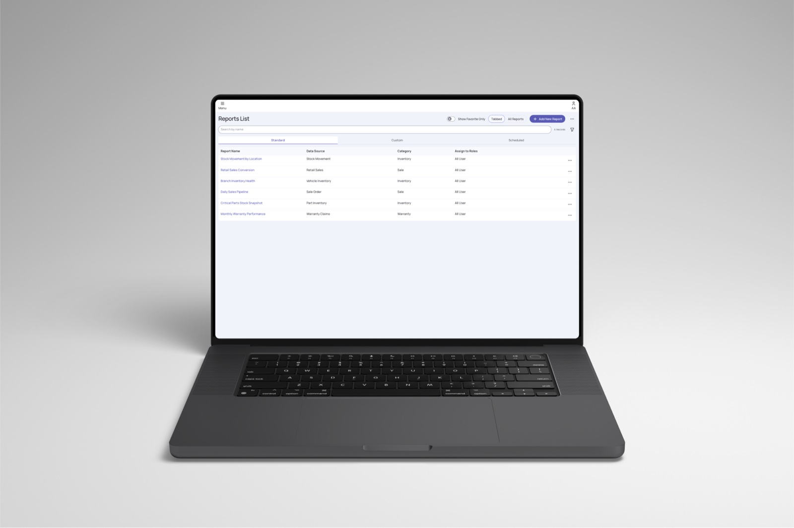
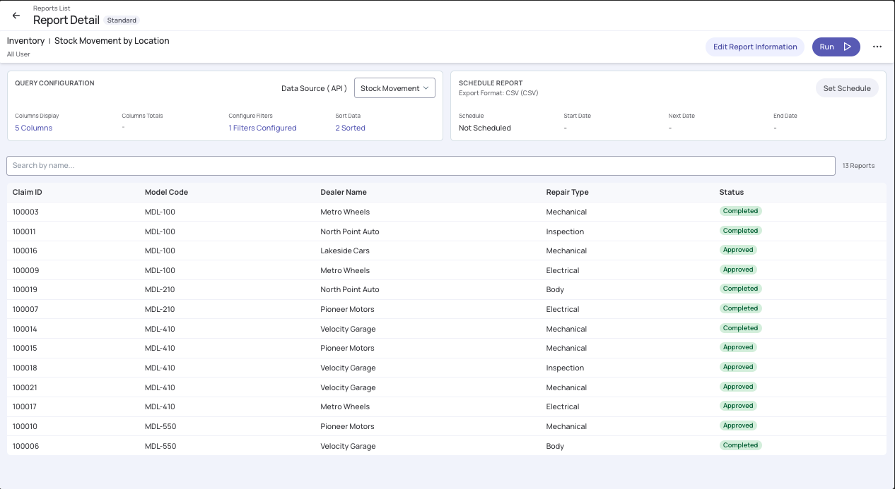
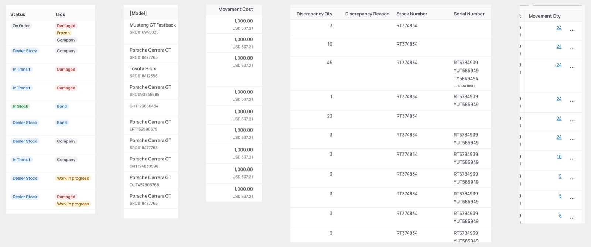
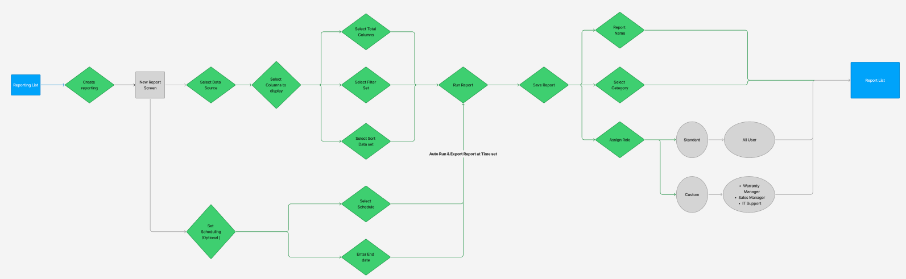
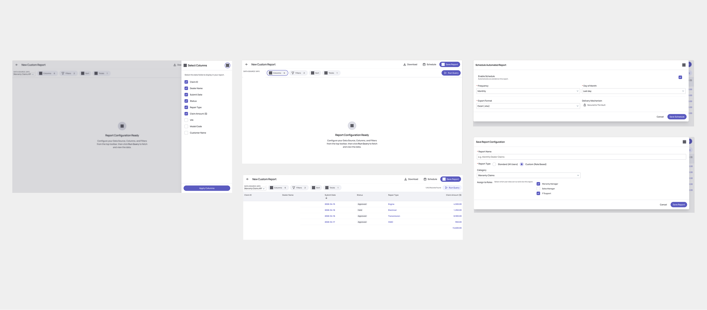
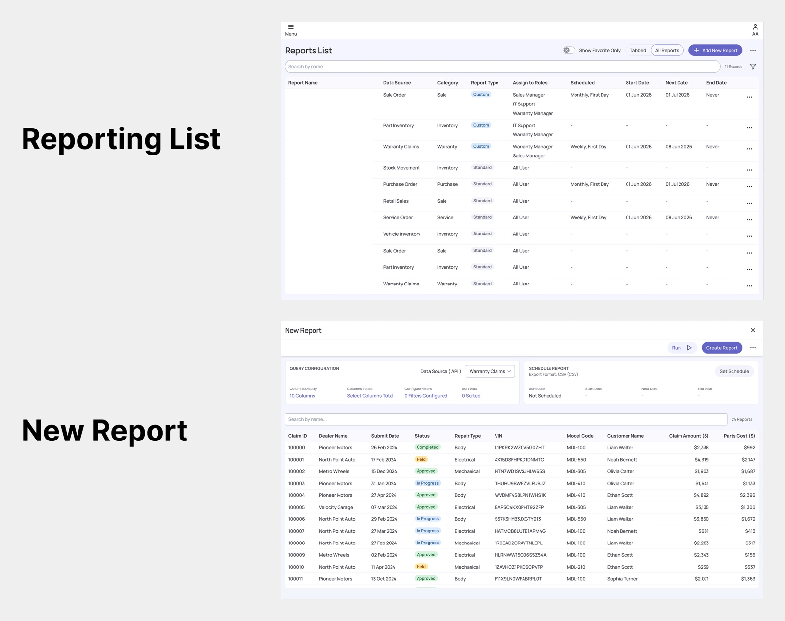
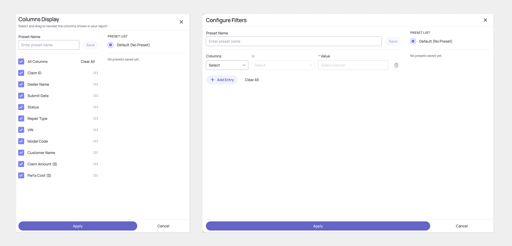

Enterprise SaaS · UI & Angular Front-end
One dynamic report screen built to serve every workbench.
DistributorPower connects Sales, Logistics, Warranty, and Finance for automotive distributors. Previously, reporting meant hunting through scattered workbenches and manually exporting spreadsheets. Working directly with the BA, I designed and built a single dynamically rendered self-service reporting module directly in HTML/Angular, complete with column builders, filter presets, and automated scheduling.

Automatically accommodates future workbenches without custom screen builds.
Inherits the platform's existing RBAC permission model with zero duplicate rules.
End-to-end delivery from workbench audit to production-ready Angular markup.
01 · Context
Unifying enterprise automotive analytics without multiplying screens.
DistributorPower is Pentana Solutions' enterprise platform managing end-to-end automotive distributor and dealer operations across stock tracking, logistics, warranty claims, and financial workflows.
As the software provider scaled new workbenches, building bespoke reporting screens for every domain became unsustainable. Pentana needed one self-service module that adapts dynamically to any data source while honoring existing role permissions.
DistributorPower Web
Admin, Authorised, Standard
Configure, save preset, schedule
Figma + Production HTML/Angular
02 · Problem
Scattered exports, manual repetition, and zero consistency.
Business teams across Sales, Inventory, and Warranty depended on IT or repetitive manual workarounds just to pull routine numbers.
Buried per-workbench exports
Users had to navigate into separate workbenches to locate export buttons, making cross-domain reporting impossible without manual spreadsheet merging.
Repetitive manual triggers
Recurring deliverables such as monthly inventory snapshots and weekly sales summaries had to be run manually every cycle.
No governed presets for roles
Admins and IT support could not pre-configure and distribute approved report views, leading to mismatched columns and conflicting numbers across teams.
03 · My role
End-to-end independent ownership from research to live code.
Pattern Audit & UX Flow
Audited existing DistributorPower workbenches for recurring data-table patterns and mapped end-to-end flows across three permission tiers.
Design System UI Craft
Applied DistributorPower's enterprise visual system to complex configuration sidebars, drag-reorderable column lists, and multi-condition filters.
HTML / Angular Implementation
Built interactive, reusable high-fidelity layouts directly in VS Code so engineering could integrate without rebuilding from static Figma frames.
04 · Approach
Audit existing tables, map three roles, prototype in code.
Because this module had to feel native inside an existing enterprise suite, consistency with established workbench patterns took precedence over reinventing controls.
Workbench Audit
Cataloged table layouts, filter drawers, and toolbar patterns across existing modules.
Role Userflow
Mapped Admin, Authorised, and Standard paths across Standard, Custom, and Scheduled reports.
Wireframes
Established dynamic layout hierarchy independent of underlying column schema.
Design System UI
Styled list views, builders, and drawer states to match DistributorPower.
Preset Iteration
Integrated mid-project client request for savable Column and Filter presets.
HTML Handoff
Delivered animated, stateful HTML/Angular templates directly to developers.


05 · Scalable Configurator Architecture
Designing one interface that handles unknown schemas.
When a single UI must serve Inventory, Warranty Claims, and Sales Orders alike, rigid form layouts break immediately. The interface shifts complexity into two modular sidebars: Columns Display and Configure Filters, each backed by reusable presets.
| User Tier | Browse & Run | Custom Builder & Presets | Role Distribution & Scheduling |
|---|---|---|---|
| Standard User | View & export assigned Standard reports. | Apply personal column/filter presets without altering shared templates. | Download scheduled outputs. |
| Authorised User | Access cross-workbench data allowed by role. | Build, save, and reuse Custom reports with custom column ordering. | Schedule personal recurring exports. |
| Admin / IT | Full visibility across platform data sources. | Create approved templates and standardized presets. | Assign governed reports to specific roles and automate schedules. |


06 · Key solutions
Crafted for high-density enterprise clarity.
1. One unified report directory with clear tab separation.
Instead of scattering exports across modules, the Reports List centralizes everything under three scannable tabs: Standard, Custom, and Scheduled, paired with a Favorite toggle and instant search.
Clean tabular typography, subtle row hairlines, and unambiguous primary action placement ('+ Add New Report') let non-technical staff locate or create reports in seconds.

2. Modular Column Display and Filter sidebars with saved presets.
Midway through high-fidelity design, Pentana introduced a crucial requirement: users needed to save and reuse column and filter setups on demand.
Both slide-over sidebars split cleanly into two panes: active builder controls on the left (checkboxes with six-dot drag-to-reorder handles, or multi-rule column/operator/value filter rows) and a live Preset List on the right, keeping complex configuration effortless to scan and apply.

07 · Trade-offs
Scalability over one-off customization.
Focusing on a rock-solid dynamic table, column picker, and filter builder meant every future workbench gets reporting out of the box with zero extra UI build cost.
Keeping multi-column selection and filter rules inside wide slide-over drawers preserved full horizontal table density while still giving preset management room to breathe.
Building high-fidelity states directly in HTML/Angular took tight coordination with the BA, but eliminated translation drift during engineering integration.
08 · Outcome
End-to-end self-service reporting delivered directly in code.
- Resolved all three core client pain points: unified cross-workbench access, governed role presets, and automated scheduled exports.
- Delivered my first full end-to-end solo design-to-HTML module from initial workbench research through stateful Angular markup.
- Proved the scalability of DistributorPower's component-first design system when accommodating mid-project preset requirements without rework.
Shipped directly into Pentana Solutions' DistributorPower enterprise suite alongside BA Matthew and the Angular engineering team.
09 · Reflection
What I learned.
Component-first systems absorb scope changes gracefully.
When saved presets arrived mid-sprint, clean sidebar architecture let us introduce a two-pane preset pattern without disrupting the main report canvas.
Designing in HTML sharpens interaction realism.
Building real column drag states, focus rings, and drawer transitions in code caught layout edge cases static mockups often hide.
Close BA partnership accelerates enterprise UX.
Working daily with the Business Analyst aligned permission rules early so every UI state matched real API capabilities.
Pentana Registration: One role-aware flow for corporate and dealer registrations.